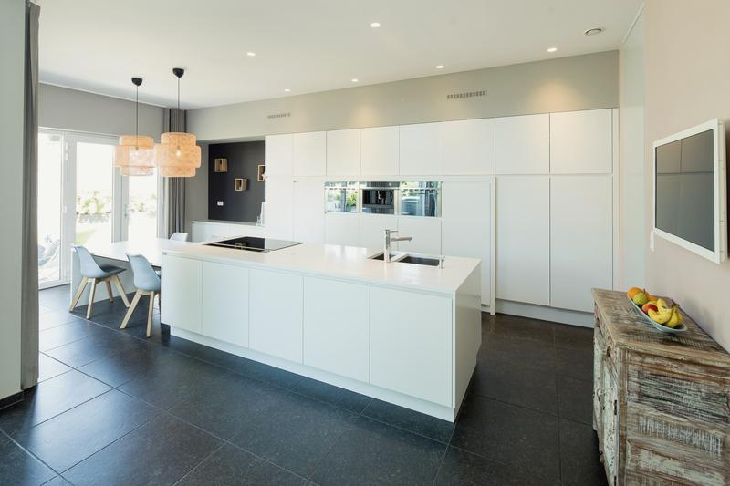
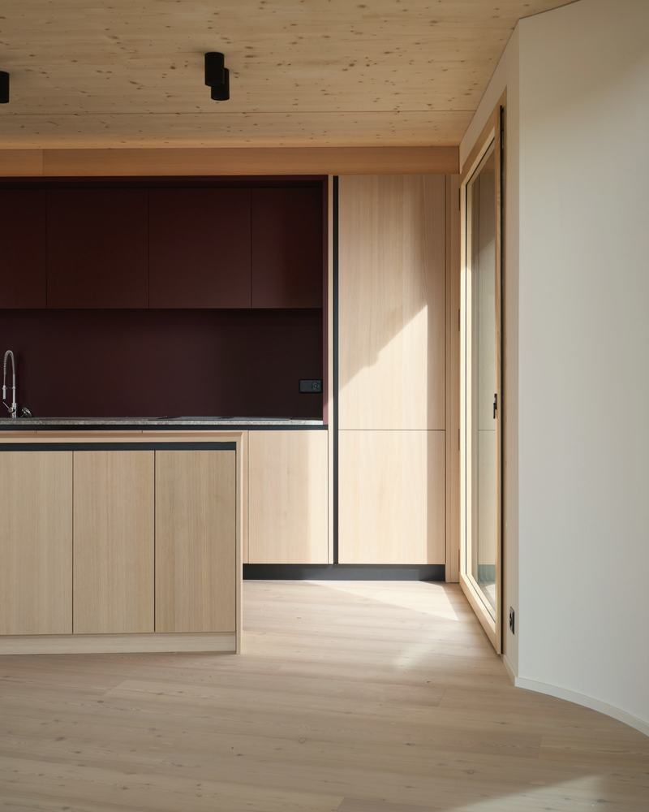
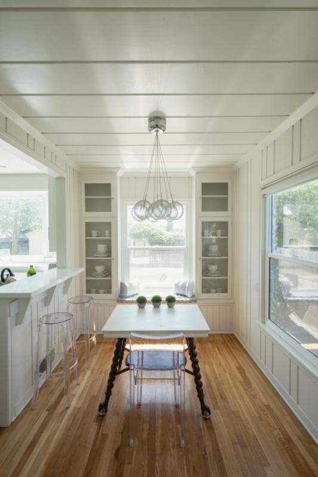
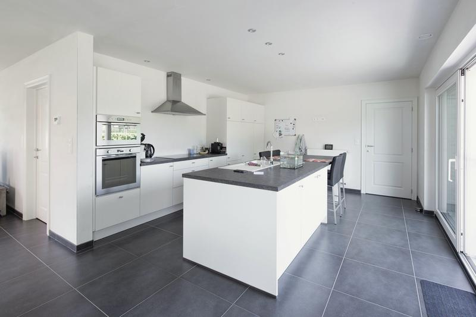
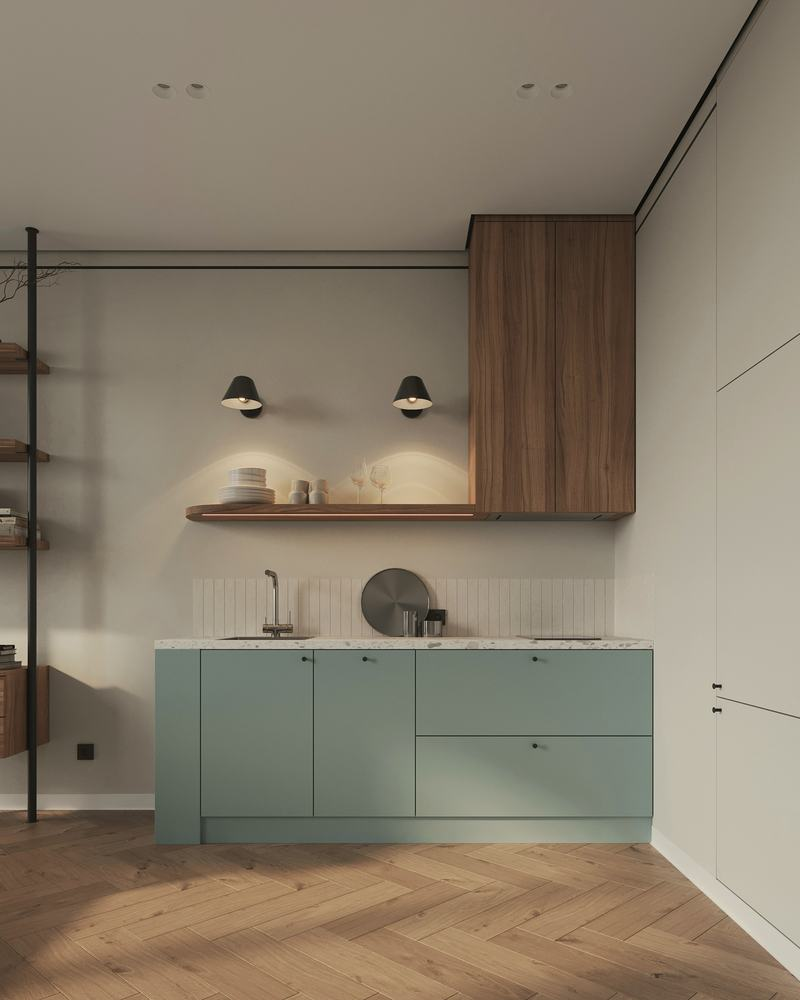

K-024
Palokka, Jyväskylä
2026- Pituus
- 4,8 m
- Ovet
- Tammi, kehysovet
- Työtaso
- Tammi 40 mm
- Hinta
- 24 300 €
Verstaalla. Asennus viikolla 44.
Keittiöt 2025–2026
Tässä ovat keittiöt, joista meillä on kuvat ja asiakkaan lupa näyttää ne, eli noin kolmannes kahden viime vuoden töistä. Numero kertoo, monesko keittiö se oli valmistumisvuotenaan. Hinnat sisältävät kalusteet ja asennuksen, mutta eivät kodinkoneita tai kivitasoa.
Verstaalla. Asennus viikolla 44.









Muut työt
Keittiöiden lisäksi teemme kiintokalusteita, ja liukuovinen vaatekaappi maksaa meillä yleensä 1 800–2 600 € metriltä asennettuna.
Alkuun riittää valokuva vanhasta keittiöstä ja pari mittaa, ja vastaamme kahden arkipäivän kuluessa.
048 562 1913 arkisin 8–16
hei@pihka-keittiot.example
Valokuvat: AVL Woningbouw (K-014, K-021, K-030), DTILE (K-022), Matt Bango (K-003) sekä rawpixel.com, kuvaaja ei tiedossa (K-006, K-009, K-011, K-017). Kuvissa näkyvät tilat eivät liity kuvitteelliseen yritykseen.